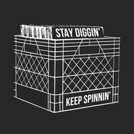

Set up your own Crate
Crate turns your Discogs collection into a crate you can browse and mix from, with BPM, key, previews and mixes. Your own copy is free, runs on your GitHub account, and shows only your records. Setup takes about 5 minutes.
First, your names
No GitHub account yet? Create one for free, then come back. The buttons below fill in with your names.
Steps
-
Make your copy
Keep the name Discogs-crate and leave it Public (GitHub only hosts free sites from public repositories). Press Create repository.
Use this template -
Tell it your Discogs username
Name:
Add the variableDISCOGS_USERNAME
Value:your Discogs username
Then press Add variable. -
Turn on the website
Under Build and deployment, set Source to GitHub Actions.
Open Pages settings -
Pull in your collection
Press Run workflow, then the green Run workflow button. If GitHub asks first, press I understand my workflows, go ahead and enable them. Your records appear within a few minutes; BPM and key fill in over the next few hours. After that it re-syncs by itself twice an hour.
Run Sync collection -
Open your Crate
On an iPhone, open it in Safari and use Share → Add to Home Screen to get the app icon.
Open my Crate
Optional extras
Private Discogs collection
Crate reads public collections without a password. Either make yours visible (Discogs Settings → Privacy → Allow others to browse my collection), or generate a Discogs token and add it as the secret DISCOGS_TOKEN. A token also makes the first sync faster.
Full songs with Spotify
If you have Spotify Premium, make your own free Spotify developer app and paste its Client ID in Crate. Crate's Settings tab walks you through it and shows the exact address to use.
Spotify developer dashboardEdits and mixes on all your devices
Without this, BPM/key fixes and mixes stay in the browser you made them in. Make a fine-grained token for only your Discogs-crate repository with Contents: read and write, and paste it in Crate's Settings.
Create a GitHub tokenApp updates
Every night your copy picks up the latest app code: new features and fixes. It never takes anyone else's records or mixes, and never changes yours. To stop updates, add the variable CRATE_AUTO_UPDATE with the value off. Changes to the automation itself only come along if you add a CRATE_UPDATE_TOKEN secret (a fine-grained token for your repository with Contents and Workflows set to read and write).